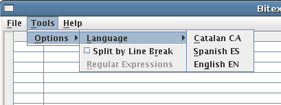
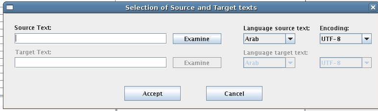

bitext2tmx: QuickStart
Purpose
bitext2tmx is a program to segment and align corresponding translated sentences (of an orignal version and its translation) and generate a translation memory from the results for use in computer-assisted translation (CAT). The corresponding sentences used are currently read in from two plain text files or a Translation Memory eXchange (TMX) document format (version 1.0M0 and later). The alignments produced are saved out as a translation memory in TMX format.
Note: the instructions given here are valid for bitext2tmx version 0.9. They will be updated when a new version is released.
System Requirements
bitext2tmx has been developed as a Java application to be used on any
Java-supported platform. Therefore, a Java Runtime Environment (JRE),
version 7 or higher, is required on the system where it is to be used.
A JRE may be obtained from
http://java.com and other sources (e.g.,
http://www-128.ibm.com/developerworks/java/jdk/index.html).
Documentation on Java installation and use is also available at the same
locations.
Installation
In most cases, it will suffice to unpack a bitext2tmx package in a folder of your choice. Packages are currently available in Zip(.zip), 7-Zip(.7z), tar-gzipped(tar.gz), or tar-bzip2(tar.bz2) formats. Go to the bitext2tmx (forked) project to download a package.
Text Preparation
bitext2tmx only works with plain-text files (Unicode UTF-8 or ISO-8859-1 character encodings); therefore, you should save your two texts as plain text in either encoding before you align them with bitext2tmx.
For instance, if you use OpenOffice.org Writer, go to File, Save As, select "Text, Encoded" from the file types list and check on the "Edit Filter Settings" box. Click Save and select the appropriate encoding when asked (use Unicode UTF-8 or ISO-8859-1).
Basic Usage
Note: bitext2tmx may look different on a particular system than the images given in this section.
-
Go to the folder where you have unpacked bitext2tmx and double click on
bitext2tmx.jaror run it withjava -jar bitext2tmx.jarfrom the command line. -
Go to Tools, Configuration and activate the options you want (Split by Line Break, etc., Language for menus, etc.), as shown in the image:

-
Go to File, Open. Select the source and target texts (you can browse the filesystem), the source and target languages from the menus, and the encoding of texts (the encoding you used to save them). Click on Accept.

-
After bitext2tmx completes the initial loading and processing of the files, you will see the text in two columns, the left for the original source text and the right for the translated target text, as in this image
-
The beginning of each segment is shown in a row. The full text of the current segment is shown below the column in a separate text area.
-
Most likely this alignment will have to be corrected so that the source segments are aligned to the corresponding target segments: use the keys that are under either column to Join two segments into one, Split the current segment at the cursor position into two segments, Delete a segment (used for blank lines), and so on. You can also correct a segment during alignment. It is always possible to Undo a previous action.
The current version (0.9) of bitext2tmx does not allow you to store a partially completed alignment job (this will be solved in the next version). If you want to start all over again, click on Abort.
Save Aligment as TMX
When the alignment is satisfactory, click on Save. Name the file and look for the folder where you want to store your alignment as a TMX translation memory and click on Save again. The resulting translation memory may be used with OmegaT or other computer-assisted translation tool that supports TMX.
Licence
Copyright (C) 2006-2008 Mikel L. Forcada and Raymond Martin.
Copyright (C) 2015 Hiroshi Miura .
This material may be distributed only subject to the terms and
conditions set forth in the Open Publication License, v1.0 or
later (the latest version is presently available at
http://www.opencontent.org/openpub/).